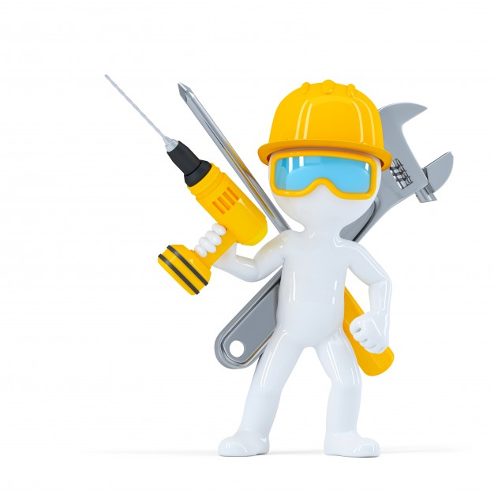

DESCRIPTIF DU TRAVAIL A EFFECTUER
Le Robot
Le point de départ est le robot Ohbot qui devra être modifié afin d'intégrer les capteurs de présence et la carte de contrôleur.
Les performances
Le robot devra réagir à la présence d'un visiteur.
Le robot devra suivre le mouvement du visiteur.
Travail demandé
Vous allez restituer votre travail, par une présentation orale, type « revue de projet ». Pour votre soutenance vous remettrez un diaporama (pensez à garder suffisamment de temps pour sa réalisation) d'une quinzaine de diapositives (± 2), ordonnées :
Vous vous efforcerez d'évaluer le coût matériel de ce projet, à partir de la liste des fournisseurs proposée.
Productions finales attendues :
Dossier technique (Français/Anglais) contenant l'ensemble de vos documents préparatoires et diaporama de présentation finale
Même si chaque binôme a une tâche particulière assignée, il demeure que la cohérence de l'ensemble sera bonifiée et vous permettra de mener à bien votre projet.
Créé avec HelpNDoc Personal Edition: Créer des documentations web iPhone